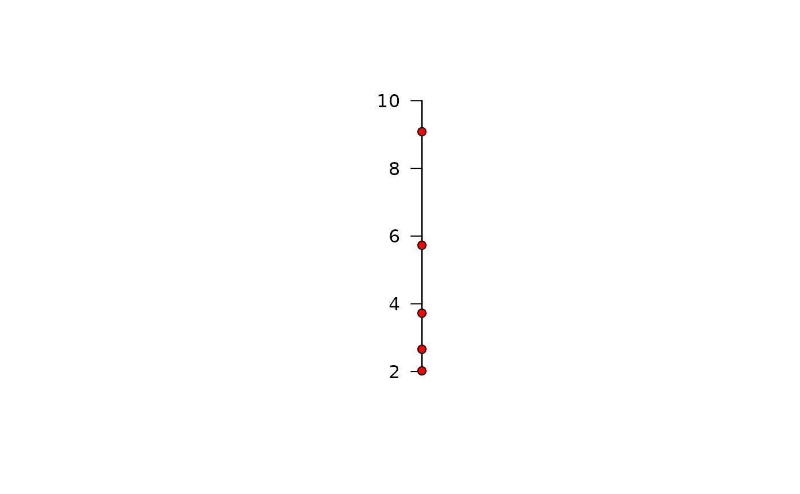

This function produces a one dimensional (pretty) number line or timeline onto which observed data are added. The line is drawn by pretty_axis. The function can produce a line as an independent plot, or add the line/points to an existing plot. In the latter case, rather than re-defining a new axis, a list of axis parameters for the existing plot (i.e. returned by pretty_axis) can be inherited and, if necessary, modified, before its addition to an existing plot.
pretty_line( x, pretty_axis_args = list(side = 1), inherit = NULL, replace_axis = NULL, add = FALSE, return_list = NULL, ... )
Arguments
| x | A vector of observed data. Numeric/integer, factor, date, or date-time objects are supported. |
|---|---|
| pretty_axis_args | A named list of arguments that is passed to |
| inherit | (optional) If the |
| replace_axis | (optional) If the |
| add | A logical input which defines whether not the line should be added to an existing plot ( |
| return_list | (depreciated) A logical input which defines whether or not to return the list produced by |
| ... | Additional arguments passed to |
Value
The function produces a number line or a timeline. The function also invisibly returns the list of axis parameters defined by pretty_axis.
Author
Edward Lavender
Examples
#### Generate some example (numeric) data for example number lines set.seed(1) x <- runif(5, 0, 10) y <- runif(5, 0, 10) #### Example (1): Plot a number line using default options pretty_line(x) #### Example (2): Customise points via ... pretty_line(x, pch = 21, bg = "red")#### Example (2): Customise the number line via pretty_axis_args pretty_line(x, pretty_axis_args = list(side = 2, axis = list(las = TRUE)), pch = 21, bg = "red")  #### Example (3): Add a number line to an existing plot: # Create plot axis_ls <- pretty_plot(x, y) # Method 1: manually specify pretty_axis_args as desired and specify add = TRUE: pretty_line(x, pretty_axis_args = list(side = 3, axis = list(pos = axis_ls[[2]]$lim[2])), add = TRUE, pch = 21, bg = "red") # Method 2: specify axis_ls argument to pretty_axis_args and, if applicable, inherit. # In this situation, necessary arguments (e.g. side) can be replaced via replace_axis # ... while the properties of the axis (i.e., labels, colour etc.) are maintained: axis_ls <- pretty_plot(x, y) pretty_line(x, pretty_axis_args = list(axis_ls = axis_ls), # select the first element of axis_ls i.e. axis_ls[[1]] inherit = 1, # replace the following arguments in axis_ls[[1]]$axis while retaining remaining # ... arguments: replace_axis = list(side = 3, pos = 5, labels = FALSE, lwd.ticks = 0), add = TRUE, pch = 21, bg = "red") #### Example (4): An examine with time series data i.e., a timeline set.seed(1) tseq <- seq.POSIXt(as.POSIXct("2017-01-01", tz = "UTC"), as.POSIXct("2018-01-01", tz = "UTC"), by = "days") pretty_line(sample(tseq, size = 10), pch = 21, bg = "red")